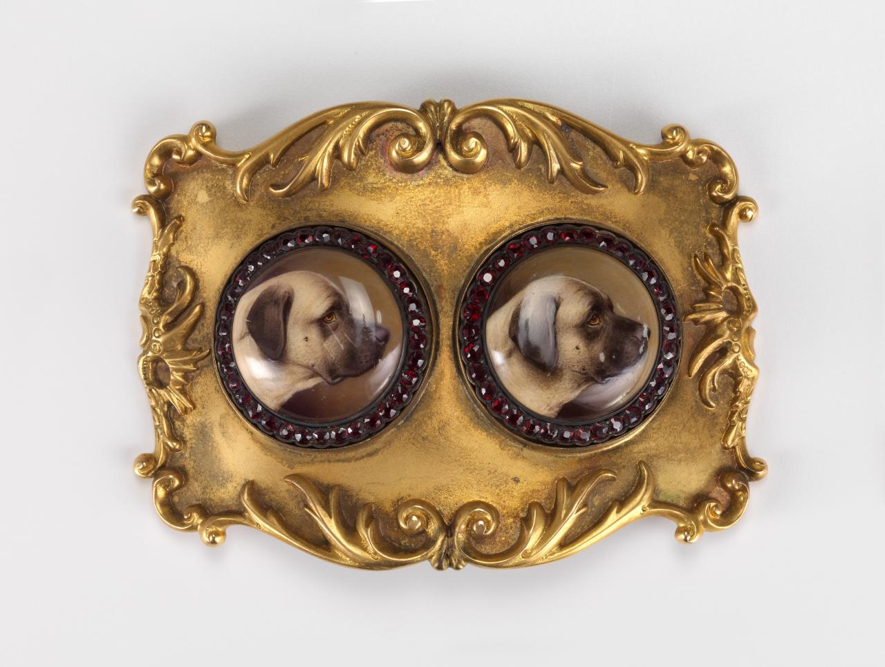

WEEK2 1)
Q:Spend two minutes with the experience and list all of your actions in granular detail.
When I opened the page, I found that the overall style of the site was simple and clear. I first noticed the scrolling images at the top of the page describing recent NGV events. Then I slid down and found that details and dates for each show were written together on cards, making it easy to view. Then I saw the navigation bar at the top, which clearly directed people to the page they wanted to see. Finally, I clicked into the exhibition page of "Who Are You", and the inside works displayed in the form of video at the top were very attractive. My two-minute experience is over.
WEEK2 2)
Q:What was the first thing you paid attention to when interacting with the experience?
The first thing I noticed about the site was its simple layout and simple black and white style. Such sites make it easy to find the information you need at a glance. Information is very important when creating a website, and you need to think about the user experience.
WEEK2 3)

Q:What did you spend the most time engaging with?
What I spent the most time engaging with was clicking on each card and going through each artwork and introduction in detail. The experience is like seeing an exhibition in an art gallery.
WEEK2 4)
Q:What was the most common action in your two minute interaction with the experience?
During the two-minute interaction, what I often did was click on each item in the top navigation bar to view it.
WEEK2 5)
Q:What is your impression of the intended primary goal of the interactive experience?
My initial goal was to learn about recent exhibitions. I love all kinds of artworks on display in art galleries. They inspire me.
WEEK2 6)
Q:How does the experience communicate it's primary goal?
The main goal of the site is to show users various exhibitions and activities, so it has designed a lot of cards with links to see very detailed content. Second, the site also needs to entice users to buy tickets to the offline experience, so there are also buttons in the navigation bar to guide users to make purchases.
WEEK2 7)
Q:What is your impression of the intended length of a single interaction and how often you are intended to interact with the experience?
I basically click every minute or so, because I need to skim the information on the web. It took me 5 minutes to read and look at all the artwork photos when I saw something that was more interesting to me.
WEEK3 8)
Q:What metaphor or metaphors does the experience's mental model reference?
The mental model design of the NGV website allows users to understand how the website works with minimal effort. In addition to the classification of NGV activities, the design of the ticketing page performs the same function as the real world. Other examples are shopping cart icons, download icons, and search icons.
WEEK3 9)
Q:What does this reference suggest about how you should feel and/or act when engaging with it?
My experience with NGV websites has taught me the importance of a clear page layout and the need to place important information in a prominent position as a heading, so that the user can quickly learn about the content of interest. In addition, it is important to choose the pictures, some color pictures with high contrast can attract users.
WEEK3 10)
Q:What is the most frustrating element of the interaction and what makes it frustrating to you?
I think the frustrating element is the membership design of the site. It has a lot of different membership options, but the font is much smaller and each option has to be re-viewed. I think this one needs to be simpler.
WEEK3 11)
Q:What is the most satisfying element of the interaction and what makes it satisfying to you?
The elements I was most pleased with were the style and color of the page and the layout. And the selection of images that the page chooses to display on the home page are attractive elements.